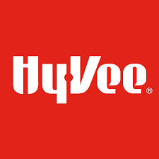

Scroll Down
Welcome to My
Portfolio Website
About Me
Hello! I'm Dallas Schauer, a Junior Software Engineer in the Twin Cities metro area.
Interests
My personal interests include sports, movies, and hiking. I am passionate about sports
statistics and have a lifetime goal of visiting every
U.S. National Park. I love animals and have two gray cats at home.
I have had an interest in programming since high school, where I learned Java programming.
Since going to school for Computer Science, I have spent time working with Java Springboot
framework, Python Flask framework, and HTML/CSS/JS web design.
Education
University of Minnesota : Bachelors Degree - Computer Science
3.64 GPA - Cum Laude
dallas.j.schauer@gmail.com
Work Experience
-

Tata Consultancy Services - Software Engineer
August 2022 - Present
Completed Core Java and Java SpringBoot training bootcamp. Completed full stack applications both individually and through team cooperation. Additionally, trained in Agile methodology, soft skills, and security measures.
-
Ameriprise - Operations Engineer
November 2022 - Present
Information security analyst working with users regarding Identity access management issues, such as the authentication and authorization of users. Work with Java codebase, Servicenow ticketing system, and AWS cloud systems.
-
-
University of Minnesota Multicultural Center of Education - Computer Science Tutor
January 2022 - May 2022
Answered computer science questions from students relating to University curriculum. Worked with students to complete homework assignments and helped students in understanding material.
-

Hy-Vee - Hibachi Chef
July 2017 - January 2022
Cooked and prepared food following appropriate health and safety protocols to deliver a quality product to the customer. Balanced performing multiple tasks at one time such as cooking, helping customers, cleaning, and preparing food to maintain productivity.


Projects
This section shows personal projects as well as significant school projects. Please click on the icons above to view.
Thank You for Reading!
Credits to these artists for the 3D models:
Computer:
* title: Retro Computer Setup (FREE)
* source: https://sketchfab.com/3d-models/retro-computer-setup-free-82eaf2047e0447a1bfea22482f1d1404
* author: Brandon Westlake (https://sketchfab.com/dr.badass2142)
Mountain:
* title: Mountain Landscape
* source: https://sketchfab.com/3d-models/mountain-landscape-67135779778a42afa0fe3f92b02f5069
* author: elsergio217 (https://sketchfab.com/elsergio217)